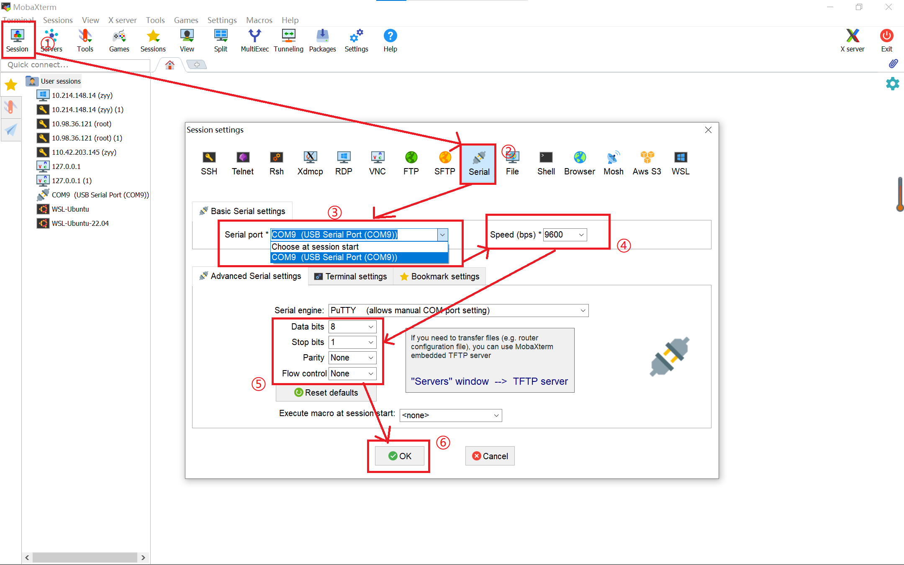
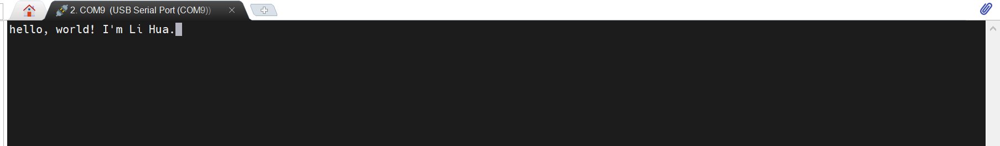

实验 4-2: 串口使用（bonus）¶
实验目的 ¶
- 学习使用 SystemVerilog 的 interface 等高级语法
- 学习串口的原理和使用
- 学习 FIFO 的原理和使用
实验环境 ¶
- 操作系统：Windows 10+ 22H2，Ubuntu 22.04+
- VHDL：Verilog，SystemVerilog
背景知识 ¶
uart 串口传输协议 ¶
uart（universal asynchronous receiver/transmitter）通用异步收发串口是一种低速、全双工、串行、异步数据传输设备。最简单的串口由两个引脚组成：
- txd：向外部设备发送数据
- rxd：接受收外部设备发送的数据
uart 串口数据线由两根线组成：一根连接 A 设备的 txd 和 B 设备的 rxd，负责将 A 的数据发送给 B；一根连接 A 设备的 rxd 和 B 设备的 txd，负责将 B 设备的数据发送给 A。从而实现设备 A 和设备 B 之间的双向交互。
uart 交互的双方并不依赖时钟进行同步，所以是异步传输的，它们共同遵守 uart 异步传输协议来确保传输的正确性。波特率（Baud Rate）用于描述串口传输的速率，例如波特率是 9600，则每秒传输 9600 个 bit 的数据，或者说每个被传输的数据会在数据线上维持 1/9600 s，常见的波特率有 9600、115200 等。
uart 每次传输一个字节的数据，他会根据协议将数据打包为一个位序列，然后通过数据线发送出去，每个位保持 1/baud s。数据线在不发送数据时保持高电平，当发送端需要发送数据时，首先发送一个单位时间的低电平，表示发送开始；然后将待发送数据从低到高依次发送到数据线上，每个位保持一个单位时间；最后发送一个单位时间的高电平表示发送结束。然后数据线回归高电平，直到下一次数据发送。
接收端恰恰相反，它时刻检查数据线上的电平，当遇到低电平时发现有数据传输，然后每隔一个单位时间做一次采样，依次将 8 个 bit 的传输数据采样拼接，得到完整的传输数据。
uart 数据传输格式如下：
- 起始位：1 bit
- 数据位：8 bit
- 奇偶校验位：0/1 bit（可选）
- 终止位：1/1.5/2 bit（可选）
串口使用 ¶
假设我们的 FPGA 板已经有了串口单元，那么我们要怎么使用上位机和 FPGA 板通过串口进行交互呢？
首先我们需要进行物理连线。因为 nexys-a7 开发板的 uart 口和 jtag 口共用一个端口、uart 传输线和 jtag 传输线共用一根数据线，所以我们将下板用的数据线连接 FPGA 和上位机的同时，已经完成了 uart 的数据线连接完毕。现在打开开发板电源，就可以在 windows 操作系统的设备管理器看到这个USB Serial Port设备。
双击这个USB Serial Port可以查看串口的配置属性，可以看到默认情况下串口波特率为 9600，数据位 8 位，没有奇偶校验位，停止位 1 位，没有流控制。如果需要其他配置可以在这里修改。
之后我们下载安装串口调试软件 Mobaxterm。双击打开后，进行串口交互界面的配置 :
- 点击 session 建立新的会话
- 点击 Serial 设置串口会话
- 选择 Serial Port 为开发板的端口
- 设置 Speed 为之前查到的默认值 9600
- 修改 Serial 其他配置和查到的默认值保持一致
- Data Bit: 8
- Stop Bit: 1
- Pairty: None
- Flow Control: None
- 点击 Ok 创建会话

之后如果串口发送数据，就可以在这个界面看到字符输出；点击会话界面敲击键盘，就可以向 FPGA 发送数据。如果上位机发送了数据，开发板的 TX 灯会闪烁，如果上位机接收到 FPGA 发送的数据，开发板的 RX 灯会闪烁。

实验步骤 ¶
实验前准备 ¶
与之前的 lab 相同，启动安装在你电脑中的 Ubuntu 22.04 环境（ WSL 或虚拟机cd 移动到 sys1-sp24 目录下，执行下面的命令：
模块接口简介 ¶
串口相关的模块很多，我们对内部细节不一一介绍了，只对端口、配置参数和使用做一个简单介绍：
UartPack¶
UartPack 包（sys-project/lab4-2/include/uart_struct.vh）定义了 uart 相关的数据类型和参数，其中 uart_t 是收发数据的数据类型，UART_DATA_WIDTH 是收发数据的宽度。
async_transmitter 和 async_receiver ¶
async_transmitter 是裸露的串口发送装置，负责将 8 位的输入数据根据 uart 数据传输协议和波特率，打包从串口的 txd 端口发送给接收设备。数据配置：8 位数据位、2 位停止位、没有奇偶校验位。
async_receiver 是裸露的串口接收设备，根据 uart 数据传输协议，接收对方发送设备发送到 rxd 的 bit 流，整合得到 8 位数据。数据配置：8 位数据位、1 位停止位、没有奇偶校验位。
uart_transmitter 和 uart_receiver ¶
uart_transmitter 对 async_transmitter 进行了包裹，将原来 TxD_start 数据传输、TxD_busy 设备繁忙数据传输控制信号转换为 valid-ready 的数据传输协议形式。
uart_receiver 对 async_receiver 进行了包裹，将原来 RxD_data_ready 数据就绪、RxD_clear 数据清空数据传输控制信号转换为 valid-ready 的数据传输协议形式。
这样便于上层模块用统一的 valid-ready 协议进行模块调用。
这里的 Decoupled_ift 是我们定义的接口 interface，用于规范模块之间的数据传输。SystemVerilog 的 interface 语法参见附录部分。
SyncFifo 和 AsyncFifo ¶
因为串口的数据收发和 FPGA 内部数据的收发速度有一定的差异，因此需要有一个队列（fifo）起到数据缓冲的作用。比如 FPGA 一次性发送了 8 个字节的数据请求，而串口只来得及发送一个，那么剩下的 7 个会被暂存到 fifo 中，等待串口空闲后慢慢读取。
SyncFifo 同步队列。负责暂存上游模块产生的数据，并为下游模块提供待处理的数据。这里上游模块和下游使用同一个时钟，没有跨时钟域。
AsyncFifo 异步队列和同步队列的区别在于上游和下游使用不同的时钟，且需要额外进行跨时钟域的保护。
Fifo 和 DecoupledFifo ¶
Fifo 在 SyncFifo 和 AsyncFifo 的基础上加入了 FIFO_KIND 参数，如果参数值为 “sync”，则内部使用 SyncFifo 模块实现，如果参数值是 “async”，则内部使用 AsyncFifo 模块实现。
DecoupledFifo 模块对 Fifo 模块的接口进行封装，将 in_data 和 out_data 的数据传输控制型号转换为统一的 valid-ready 模式，便于统一调用。
UartUnit¶
正式使用的串口单元，其内部的模块构造如下：
txd 输入的数据被 uart_trasmitter 接收后存入 fifo，等待被其他模块读取；模块发送的数据先存入 fifo，然后发送给 uart_receiver 模块发送到 rxd 端口。fifo 和 uart 驱动模块之间用 valid-ready 协议传输数据，uartunit和外部模块之间也用 valid-ready 协议传输数据。
回环测试 ¶
为了检测 UartUnit 收发功能是否都正确，最简单的方式是上位机向 UartUnit 发送一个数据，UartUnit 接收到数据之后再发送给上位机，如果发送的数据和接收到的数据一致，则说明数据收发都没有问题。
请补全src/lab4-2/submit/UartLoop.sv模块，该模块负责接收 UartUnit 的数据，然后再让 UartUnit 发送该数据，从而和上位机配合实现完整的回环测试。UartLoop 和 UartUnit 配合得到最终的回环测试模块 LoopTest（sys-project/lab4-2/general/LoopTest.sv）
UartLoop 模块的接口如下。rdata 用于接收来自 uart_rdata 的上位机数据，然后 rdata 将数据发送给 tdata，tdata 将数据发送给 uart_tdata 即可。相互之间使用 valid-ready 协议。
debug 的四个数据是用于调试的可选项。debug_rdata、debug_tdata 用于将 tdata 和 rdata 的值输送到七段数码管显示，如果回环测试的时候发现 tdata、rdata 的值和上位机发送或者接收的数据不一致，可以起到调试的作用。debug_data、debug_send 分别连接到开关和按钮，当按钮按下的时候，debug_send = 1，则 tdata 载入 debug_data 的值，然后发送给 uartunit。这样即使接收装置存在问题，发送装置仍然可以进行测试。这四个数据都是备选项，可以不实现（但是建议实现，可以帮助硬件调试
仿真测试 ¶
sys-project/lab4-2/sim/Judge.sv实现了一个 Verilog 实现的上位机，会以和 UartUnit 相一致的波特率将字符发送给 LoopTest，然后接收来自 LoopTest 的字符。Judge 每发送一个字符会输出transmit data xx，每接收一个数据会输出 receive data xx，如果比对 transmit 的数据和 receive 数据不一致怎会报错输出fail!!!，如果在规定时间内没有比对错误，会输出 success!!!。不过请注意，如果你的 UartLoop 存在错误，无法正确的发送数据，Judge 因为接受不到数据并不会报错，这个时候需要检查 log 输出，查看 Judge 输出和接收是不是相一致，而不是只有输出，没有接收。
运行 make verilate 即可进行测试，如果测试成功应该会有类似如下的输出（数据的值不一定一致
综合下板 ¶
运行 make bitstream 生成 bit 流，然后下板验证。用 “串口使用” 一节的描述将开发板和上位机连接、打开 mobaxterm、设置串口会话，然后在串口会话窗口键入字符，等待开发班接收和重新发出字符，如果窗口显示的字符和键入的字符相一致，则说明回环测试正确，反之则有错误。例如我这里输入 good morning, everyone，会话就会显示这个字符串：
开关和按钮的作用如下：
| io | function |
|---|---|
| btn[0] | debug_send |
| sw[2:9] | debug_data |
| sw[0:1] | display_sel |
| sw[0:1] | function |
|---|---|
| 00 | txd,rxd,rdata,tdata UartLoop 内部的信息 |
| 01 | rxd=0 的周期数，对板子接收到上位机数据的量化 |
| 10 | txd=0 的周期数，对板子发送数据的量化 |
| 11 | 0 |
实验报告 100 ¶
- 请在实验报告中详细描述每一步的过程并配有适当的截图和解释，对于仿真设计和上板验证的结果也应当有适当的解释和照片
细分：
- 仿真通过，输出
success!!!20- 下板测试，可以通过回环测试，要求会话窗口输出自己的学号 20
-
阅读代码和理论，设计 async_transmitter 的有限状态机，并描述 async_transmitter 的大致工作流程 40
-
uart 数据线不可避免存在毛刺和电平扰动，思考 async_receiver 可以用什么办法来规避接受数据的毛刺 20
代码提交 ¶
验收检查点 ¶
- 仿真展示
- 代码解释或设计思路
- 下板验证
- 解释 async_transmitter 的有限状态机
提交文件 ¶
src/lab4-2/ 中编写的 submit 和 include 的代码